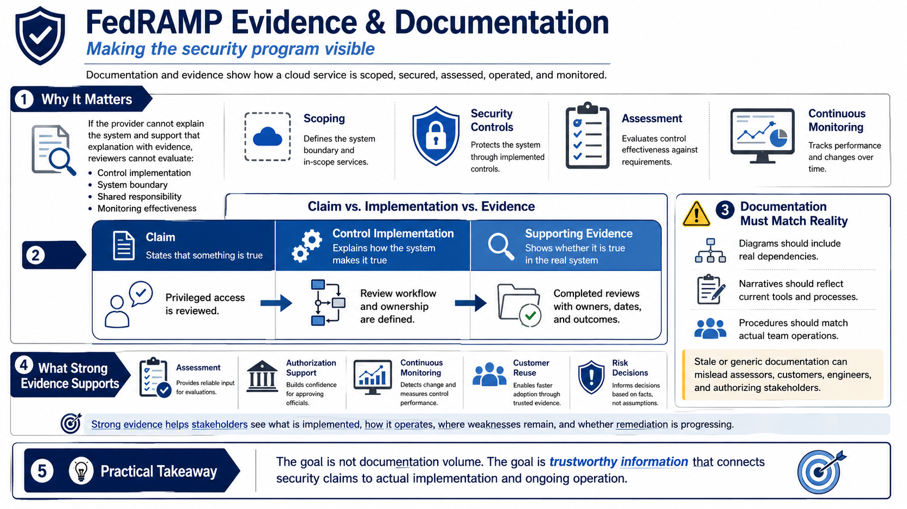

Why Evidence and Documentation Matter
Connecting to LMS... Progress: in progress

Narration
FedRAMP evidence and documentation are the record of how a cloud service is scoped, secured, assessed, operated, and monitored. They are not the security program by themselves, but they make the security program visible. A reviewer cannot evaluate a control implementation, boundary, shared responsibility model, or continuous monitoring process if the provider cannot explain what exists and support that explanation with evidence.
A useful distinction is the difference between a claim, a control implementation, and supporting evidence. A claim says something is true. A control implementation explains how the system makes it true. Evidence supports whether the statement is true for the actual system. For example, saying that privileged access is reviewed is a claim. Explaining the review process is implementation detail. Showing completed reviews, owners, dates, and outcomes is evidence.
Documentation must describe the real system rather than an idealized version of the system. If diagrams omit dependencies, if narratives describe tools that are no longer used, or if procedures do not match how teams actually work, the documentation becomes a risk. Stale or generic documentation can mislead assessors, customers, engineers, and authorizing stakeholders. Accurate documentation is part of operational trust.
Strong evidence supports assessment, authorization support, continuous monitoring, customer reuse, and risk decisions. It helps stakeholders see what is implemented, how it operates, where weaknesses remain, and whether remediation is progressing. The goal is not documentation volume. The goal is trustworthy information that connects security claims to actual implementation and ongoing operation.